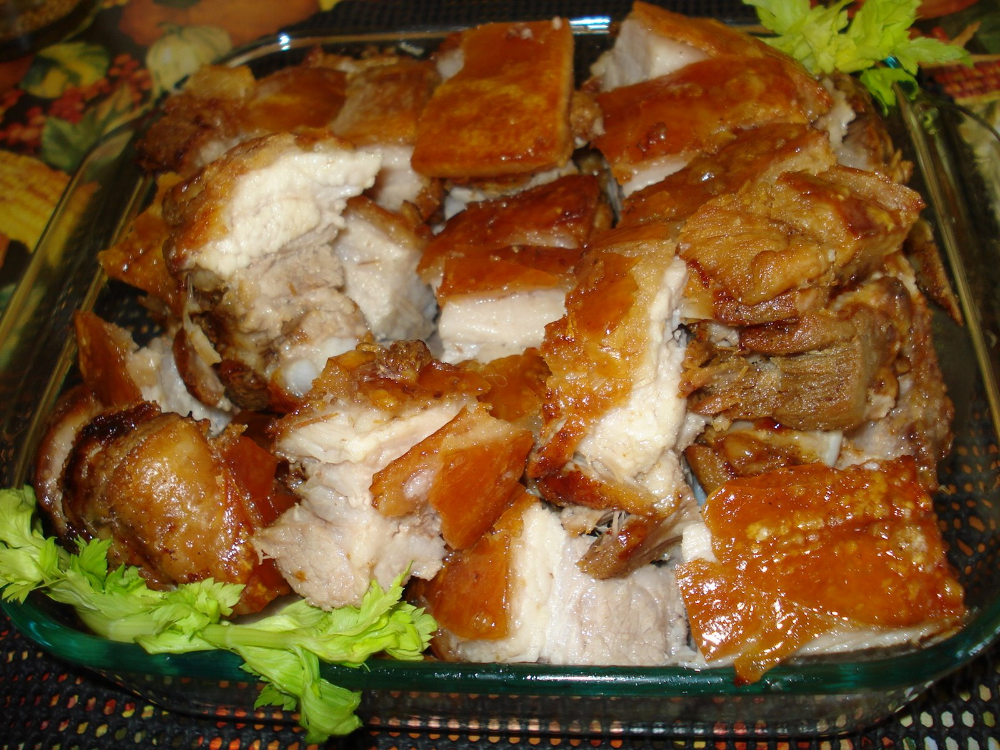

Filipino Lechon Kawali

Description
Lechon kawali is a popular Filipino dish of crispy deep-fried pork belly pieces that are super crunchy, tender, and delicious. Serve them hot with your favorite dipping sauce.
Ingredients
- 1 ½ pounds pork belly, cut into small pieces
- 3 cloves garlic, crushed
- 2 bay leaves
- ½ teaspoon salt
- ½ teaspoon ground black pepper
- 2 cups oil for frying, or as needed
Steps
- Gather all ingredients.
- Combine pork belly, garlic, bay leaves, salt, and pepper in a skillet; pour in enough water to cover. Bring to a boil, reduce heat, and simmer until skin is tender, 35 to 45 minutes.
- Drain and let sit at room temperature until pork has air-dried.
- Heat oil in a deep-fryer or large saucepan to 350 degrees F (175 degrees C).
- Fry pork in the hot oil, working in batches, until golden brown, 3 to 5 minutes.
- Remove fried pork with a slotted spoon and drain on a paper towel-lined plate.
Home